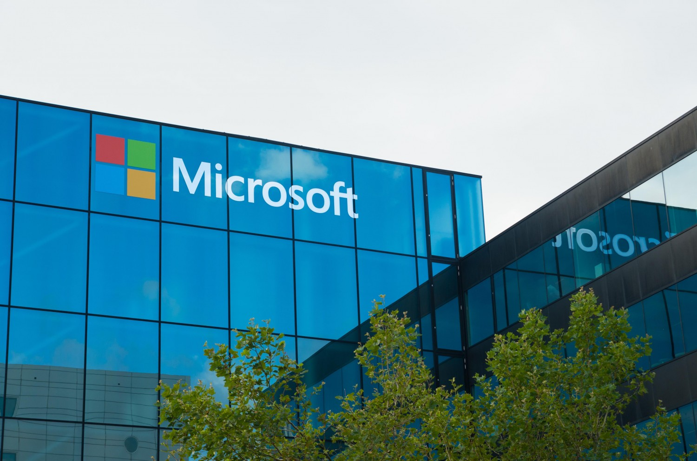
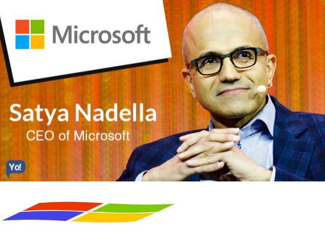

HISTORY OF MICROSOFT
American multinational company that deals specifically in computer technology
Microsoft was founded by Bill Gates and Paul Allen on April 4,1975
1972-1985 - Founding
1985-1994 - Window and Office
1995-2007 - Foray into the Web,Windows 95,Windows XP, and Xbox
2007-2011 - Microsoft Azure,Windows Vista,Windows 7,and Microsoft Stores
2011-2014 - Windows8/8.1,Xbox One,Outlook.com and Surface Devices
2014-Present - Windows 10, Microsoft Edge and HoloLens

CEO OF MICROSOFT
Name:Satya Nadella
Indian-American business executive
Salary - $429millions
Education:Electrical Engineering From Manipal University Karnatka
MS Computer Sciece in University of Wisconsin-Milwaukee
MBA from University of chicago
Award:Global indian business icon